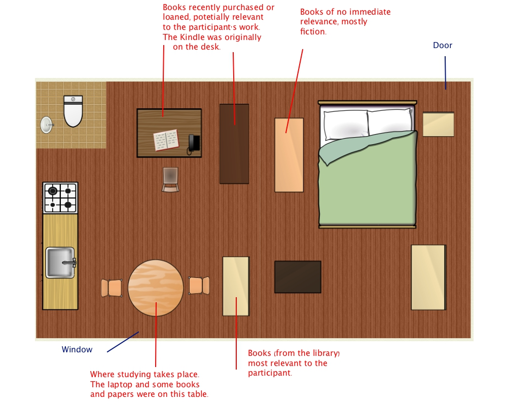
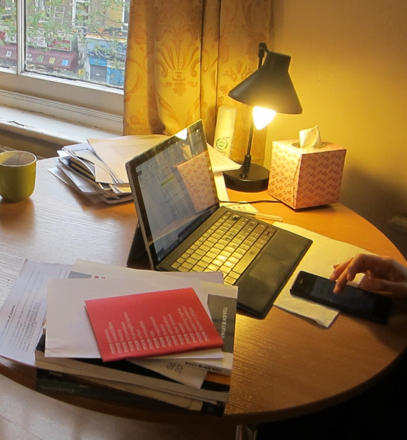
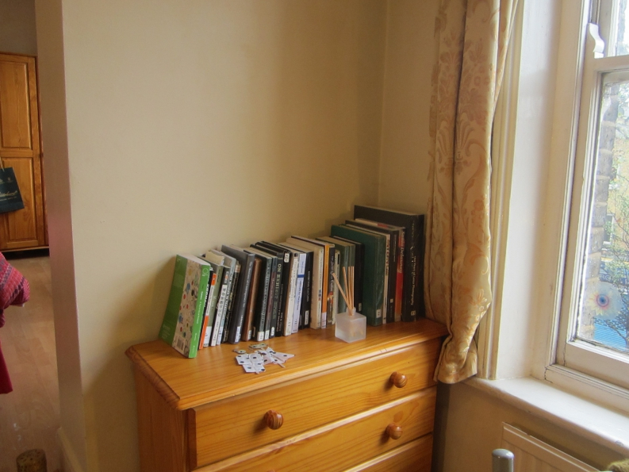

When I visited the flat for the first time, C introduced to me how she allocated books in different locations in the flat according to their relevance to her studies. Below is the floor plan of the house with annotations of different book categories.

Since C was a PhD student, she had to do a lot of writing on her laptop. The laptop, therefore, was placed on the table where she did most of her studies. She preferred using the dining table to the desk provided by the landlord because of its position next to the window, from which sounds from the street could be heard1.

C put the books in different places of the flat according to their relevance to her current study. The books and papers she was reading at the moment were on the dining table. The shelf opposite the table were books of relevance to her. Interesting, those books were all borrowed from the library since she found that books on that shelf gathered dust.

Recent purchases and books of possible relevance were put on the desk or the shelf next to the desk. Originally C put her Kindle on the desk. When I asked her about it, she moved it to the dining table. Still, Kindle was no longer her primary reading device. She purchased hundreds of e-books when she first got hold of the Kindle, but the novelty effects had worn off. The device had become slow, and she felt that the reading experience was not up to par with reading physical books. She would only use Kindle now if one of the e-books stored inside is relevant to her current study.